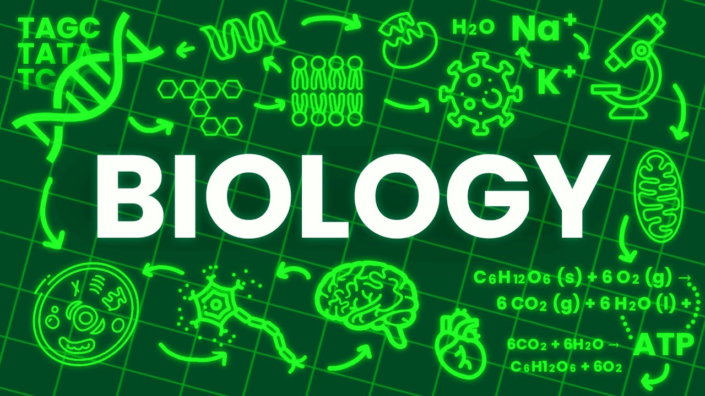

Why I Love Biology
From the moment I first looked through a microscope, I was hooked. Biology reveals the poetry of existence - how trillions of cells work in harmony to create life, how DNA writes our story, and how ecosystems balance with perfect precision.
What fascinates me most is the interconnectedness of all living things. The way mitochondria power our cells mirrors how chloroplasts harness sunlight, showing nature's elegant solutions to energy problems across different life forms.
In studying neuroscience, I'm awestruck by how 100 billion neurons create consciousness from electrical impulses. The more I learn, the more I realize how much we still don't understand about the simplest organisms, let alone the human brain.
Biology isn't just a subject - it's the operating manual for life on Earth, with new chapters being discovered every day. That's why I can't imagine studying anything else.
Back to Main Page